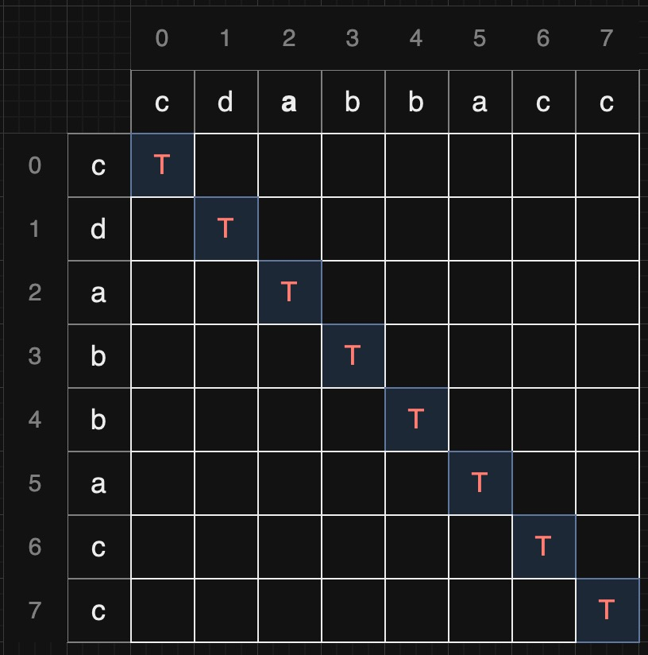
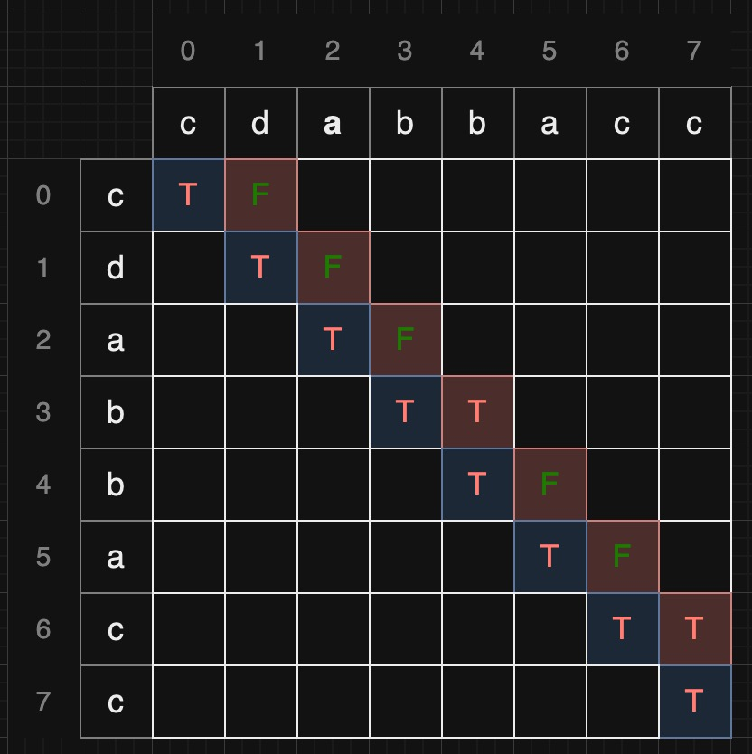
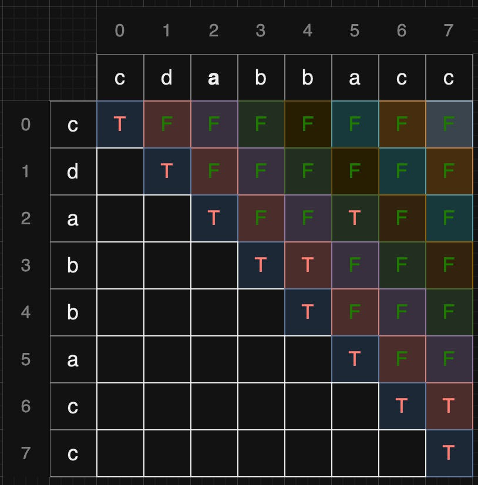

LeetCode 5 最长回文子串
1 问题描述[1]
给你一个字符串 s，找到 s 中最长的回文子串。
如果字符串的反序与原始字符串相同，则该字符串称为回文字符串。
示例 1：
1 | |
示例 2：
1 | |
提示：
1 <= s.length <= 1000s仅由数字和英文字母组成
2 Solution: Expand From Center
1 | |
下面是对代码的基本原理解释：
expand_from_center函数：- 这是一个辅助函数，用于以给定的左右索引向两侧扩展，找到最长回文串。
- 函数中的
while循环检查当前的左右索引是否满足回文串的条件（字符相等），如果满足，则继续向两侧扩展。 - 返回找到的最长回文串。
longestPalindrome方法：- 该方法使用了中心扩展法，遍历字符串中的每个字符，首先以当前字符为中心，向两侧扩展，计算出最长的回文串。然后以当前字符后面的间隙为中心计算最长的回文串。
- 在每次扩展中，通过
expand_from_center函数找到当前情况下的最长回文串，并使用max函数比较当前回文串与历史最长回文串的长度，保留较长的那一个。
返回结果：
- 在遍历结束后，
longest中保存的就是整个字符串中最长的回文串。 - 最后将最长回文串返回。
- 在遍历结束后，
这种算法的时间复杂度是 O(n^2)，其中 n 是字符串的长度。因为对于每个字符，最坏情况下需要扩展到字符串的两端，因此总体复杂度为 O(n^2)。
这段代码的空间复杂度主要取决于存储中间结果的空间。具体来说，空间复杂度包括了用于存储回文串的最长字符串 longest 的空间。
expand_from_center函数：- 该函数的空间复杂度是 O(1)，因为它只使用了常数级别的额外空间，主要是用于存储循环中的局部变量。
longestPalindrome方法：- 除了
expand_from_center函数的常数级别的空间外，主要的空间开销在于用于存储最长回文串longest的字符串。在最坏情况下，longest可能需要存储整个输入字符串，因此空间复杂度是 O(n)，其中 n 是输入字符串的长度。
- 除了
综合考虑，整个代码的空间复杂度为 O(n)。
3 Solution: Dynamic Programming
1 | |
下面是代码的主要原理：
动态规划矩阵
dp：- 创建一个二维的动态规划矩阵
dp，其中dp[i][j]为True表示字符串s[i, j+1]是一个回文串。 - 初始化整个矩阵为
False。
- 创建一个二维的动态规划矩阵
基本情况处理：
对角线上的元素
dp[i][i]初始化为True，因为单个字符一定是回文串。下面以"cdabbacc"为例：找到将所有长度为2的回文串并初始化为
True。
依次处理长度为 3 及以上的回文串：
使用两层循环，外层循环
l从 3 开始，表示当前考虑的回文串的长度。内层循环
i遍历字符串，j根据当前长度l确定。如果当前
s[i] == s[j]且dp[i+1][j-1]为True，则表示当前子串是回文串，更新dp[i][j]为True。例如计算
dp[0][2]时，只需要查看dp[1][1]是不是回文串，若是且s[0] == s[2]，则dp[0][2]是回文串。在每次更新回文串状态时，更新
longest记录当前找到的最长回文串的起始和结束位置。最终
dp数组如下:
返回最长回文串：
- 最终返回
s[longest[0]:longest[1] + 1]，即找到的最长回文子串。
- 最终返回
这种动态规划方法充分利用了子问题的解来构建整体问题的解，通过填充动态规划矩阵，最终找到了给定字符串中的最长回文子串。代码的时间复杂度是O(n^2)，空间复杂度也是O(n^2)。
4 Solution: Manacher’s Algorithm
TODO
Manacher’s algorithm[2] finds the longest palindromic substring in O(n) time and space.